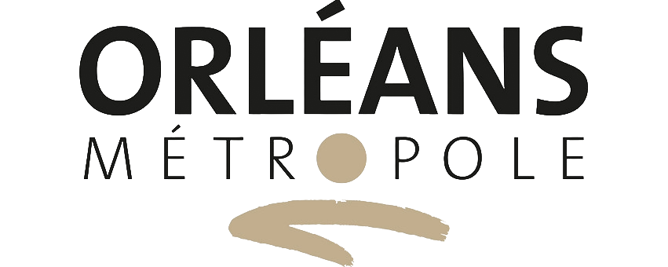
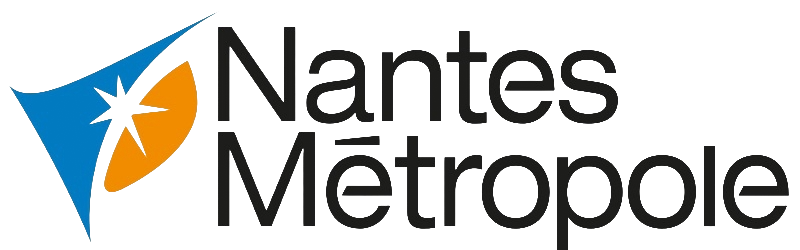

Thibaut Hiernard
« Bonjour et bienvenue sur mon site !
Je suis géomaticien, passionné de cartes et d'informatique, un peu geek sur les bords. Bonne visite ! »
Mon expertise
Projet SIG / Dev. appli ESRI
ArcGIS Pro, Experience Builder, ArcGIS Online, Dashboard, Story-Map
Geodata Analyse / Processus python
Analyse avec ArcGIS Pro, création de processus automatique via Python
Sémiologie graphique / Design UX
Cartographies professionnelles et de communication, parcours et expérience utilisateur
Réalisations
Lieux de Fraîcheur
2025-2026L'application qui permet de visualiser, renseigner et exporter les lieux frais de la Métropole.
Pour en savoir plus…
Plan Local d'Urbanisme Métropolitain, graphisme et automatisation
2020-2026Réalisation de la partie graphique du Plan Local d'Urbanisme d'Orléans Métropole (2020-2022), puis automatisation / optimisation du processus de modification du PLUM (2022-2026).
Pour en savoir plus…
Le PLUM en ligne !
2022L'application qui permet de visualiser sur une carte web les planches graphiques du PLUM.
Pour en savoir plus…Expérience

Ingénieur géomaticien métier urba/aménagement
Depuis octobre 2022Direction de la Planification, de l'Aménagement Urbain et de l'Habitat | Orléans, France
Chef de projet SIG et référent données, pilotage de la production cartographique et d’applications web, encadrement fonctionnel d’un technicien SIG cartographe.
Pour en savoir plus…Technicien SIG — cartographe « PLU »
Février 2018 à septembre 2022Direction de la Planification, de l'Aménagement Urbain et de l'Habitat | Orléans, France
Responsable SIG du PLUM, structuration et gestion de données d’urbanisme, production cartographique et réalisation d’applications web pour les services de la direction.
Pour en savoir plus…
Technicien SIG — cartographe web
Mai 2014 à février 2018Département des Ressources Numériques, Direction de l'information géographique | Nantes, France
Réalisation et administration de services cartographiques web, production cartographique, formation et accompagnement des utilisateurs SIG, diffusion de données géographiques et appui aux marchés publics SIG.
Pour en savoir plus…Formations
Examen professionnel d'ingénieur territorial (fonction publique territoriale)
Février 2020 à mars 2022CIG Paris grande couronne
Spécialité informatique et systèmes d'information, option Systèmes d'Information Géographiques (SIG) & topographie.
- Préparation CNFPT
- Admis à l'examen avec 14,4/20 de moyenne
- Promu en novembre 2023 (stage) et en mai 2024 (titularisation)
Formations ArcGIS
2016 à 2022ESRI France
Série de formations professionnelles sur l'utilisation des outils ArcGIS : ArcGIS Pro, ArcGIS Online, les GeoDataBase, ArcGIS Server.
Pour en savoir plus…MOOC « ABC de la Gestion de Projet »
Septembre 2015 à novembre 2015École Centrale de Lille
Le MOOC Gestion de Projet (GdP) introduit les apprenants à la gestion de projet :
- Dans ses fondamentaux → à quoi cela sert-il, quels en sont les principaux « points durs »
- Dans ses outils → savoir monter un projet, animer une équipe, négocier un objectif, mettre en œuvre la collaboration d'une équipe sur le net
L'objectif de cette formation est d'être capable de concevoir et de piloter un petit projet. Site internet : gestiondeprojet.pm
Pour en savoir plus…